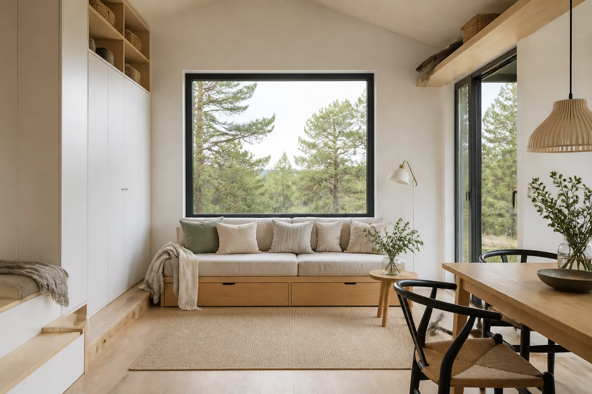

Attefallshus
Stockholms skärgård
Placerat på berget med hela glaspartiet mot vattnet. Altanen följer bergets lutning i stället för att bygga bort den.
Platsen avgör mer än modellvalet. Väderstreck, lutning och utsikt gör att två hus av samma modell sällan blir lika.
Här är ett urval. För varje projekt står vad som styrde besluten, eftersom det oftast är mer användbart än en bild utan sammanhang.
Attefallshus
Placerat på berget med hela glaspartiet mot vattnet. Altanen följer bergets lutning i stället för att bygga bort den.

Fjällstuga
Byggd för snölast och kalla vintrar. Taket och isoleringen skiljer sig från våra övriga modeller.

Fritidshus
Stora glaspartier mot skogen, mörk fasad som försvinner in i stammarna.

Attefallshus
Gästhus och kontor i samma byggnad, med egen uteplats bort från huvudbyggnaden.

Villa
Permanentboende i öppet läge. Byggnadens riktning styrs av var solen står på eftermiddagen.

Villa
Sadeltak och traditionell form, med planlösning och teknik från våra nyare modeller.

Attefallshus
Trettio kvadratmeter som rymmer sovplats, arbetsplats och matplats utan att kännas trångt.
Första steget
Berätta vad du funderar på, så återkommer vi med nästa tydliga steg. Utan krav och utan säljsnack.